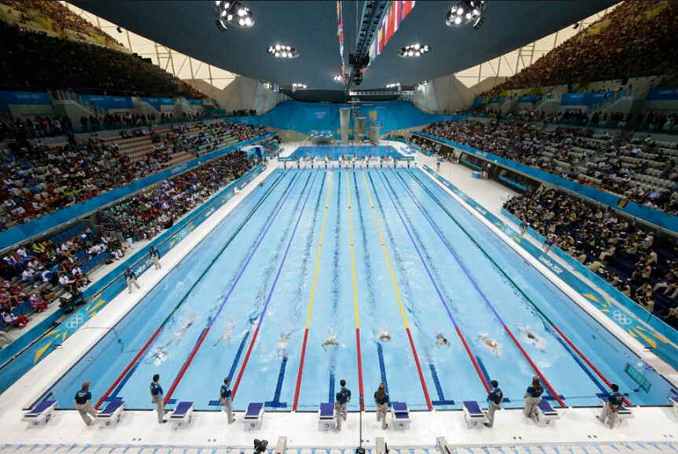

Deschis in 1953 bazin – ul de inot „Tolea Grintescu – Floreasca” a dat mai multe „nume grele” sportului romanesc. Aici s-au antrenat de-a lungul timpului jucatori emblematici pentru polo-ul romanesc. O simpla privire aruncata asupra placulelor instalate in holul mare de la intrare, dezvaluie „istoria” echipelor romanesti participante la jocurile olimpice printre care amintim: Roma 1960; Montreal 1976; Atlanta 1996; Helsinki 1952; Melbourne 1956; Tokyo 1964. Va lasam placerea de a descoperi si alte participari, precum si componenta echipelor prezente la aceste intreceri. Tot aici au fost gazduite de-a lungul timpului, printre altele si eternele derby- uri disputate cu casa inchisa ( Rapid – Dinamo, Dinamo – Steaua, Rapid – Steaua ), dar si antrenamentele nationalelor ce au facut istorie in sportul cu mingea pe apa – locul 4 la Montreal sau locul 2 la europenele de juniori de la Varna.
In prezent complexul Tolea Grintescu – Floreasca beneficiaza de 2 bazine:
Un bazin de dimensiuni olimpice 33/17 metri, in care se desfasoara antrenamente de polo, initiere inot, scufundari sau agerment
Un al 2-lea bazin, unde cei mici sunt initiati in tainele inotului de catre cei mai buni antrenori